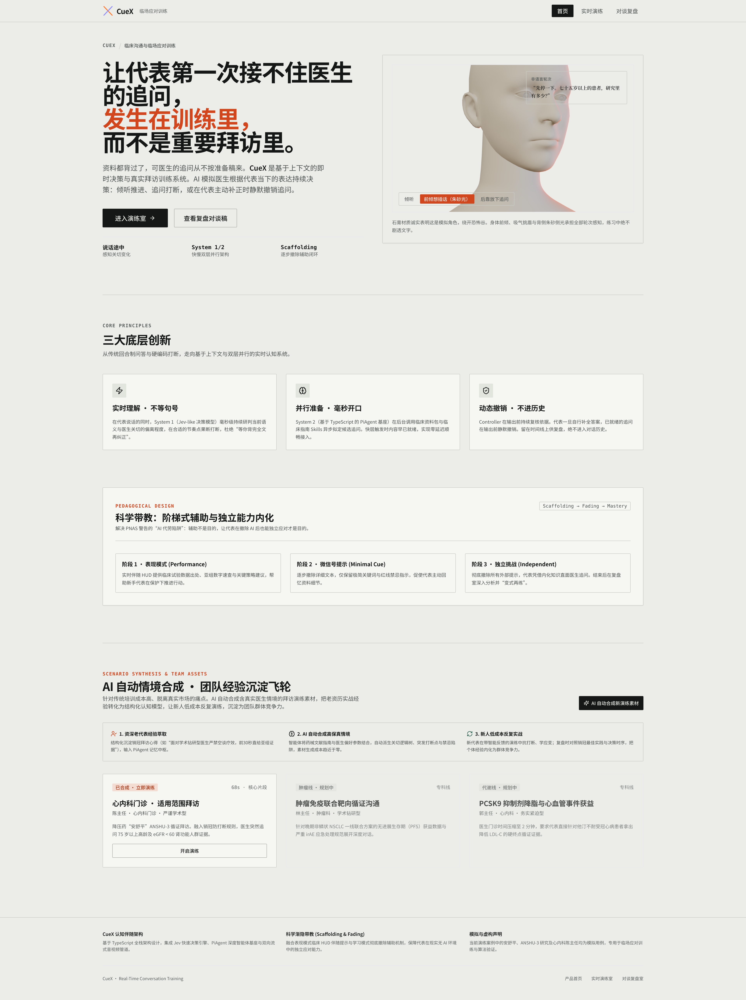
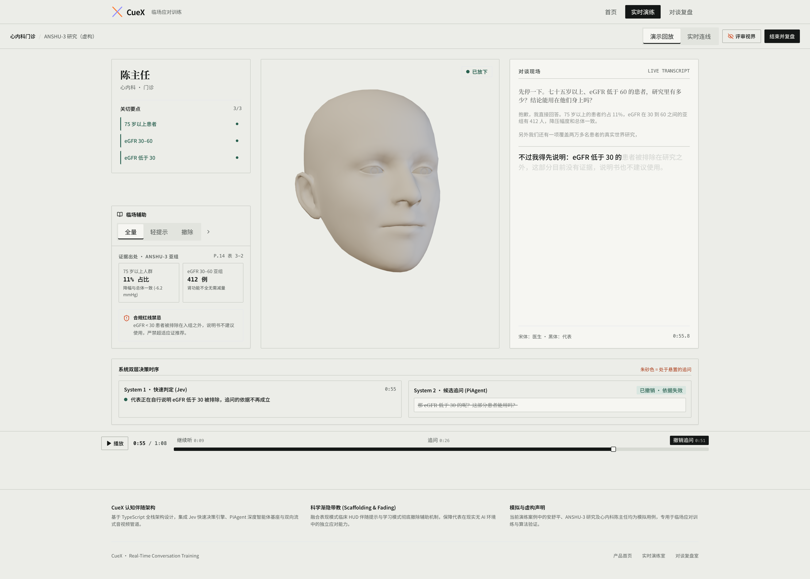

<!doctype html><meta charset="utf-8"><title>CueX film styleframes</title><style>@font-face{font-family:Sans;src:url('../../assets/fonts/NotoSansSC-VF.ttf')}@font-face{font-family:Display;src:url('../../assets/fonts/InstrumentSerif-Regular.ttf')}*{box-sizing:border-box}body{margin:0;background:#aeb7ae}.frame{width:1920px;height:1080px;position:relative;overflow:hidden;background:#ecede8;font-family:Sans;color:#141716;margin-bottom:32px}.image{position:absolute;width:1920px;left:0;top:0;transform-origin:0 0}.caption{position:absolute;left:0;bottom:0;width:100%;height:145px;padding:42px 76px;background:#141716;color:#f6f6f2;font-size:44px;font-weight:600}.tag{position:absolute;right:55px;top:30px;padding:9px 16px;background:#f6f6f2;color:#4a504d;font-size:22px}.word{display:flex;align-items:baseline;font:220px Display;color:#ece8df}.brand{display:flex;flex-direction:column;align-items:center;justify-content:center;gap:36px;background:#07080b}.brand p{color:#ece8df;font:42px Sans}</style><section class="frame" id="a"><div class="tag">实际产品界面</div><div class="caption">背熟资料，也会接不住追问。</div></section><section class="frame" id="b"><div class="tag">演示回放 · 虚构资料</div><div class="caption">自己补上答案，那句追问就放下了。</div></section><section class="frame brand" id="c"><div class="word">Cue</div><p>让每一次临场应对，都有准备。</p><p style="font-size:25px;color:#b9b5ac">记性好了一点　AI + 医疗健康</p></section>